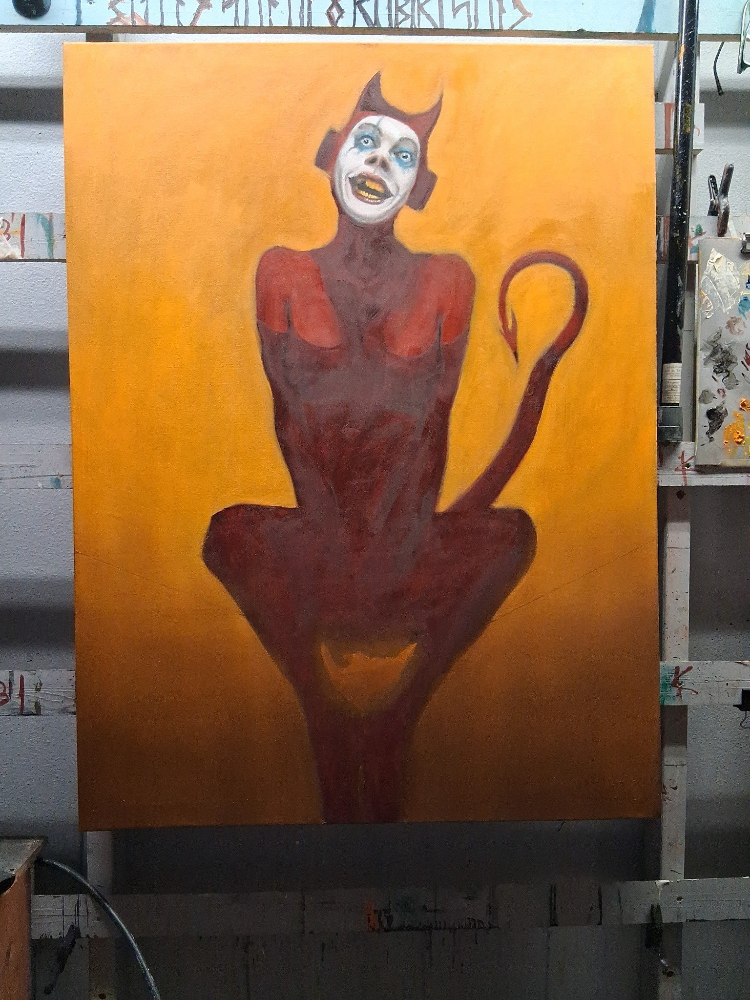

Late Night Code Breaking
I always take breaks. Indeterminate stretches where the brushes dry, and the studio lights stay off. But even then, I'm still building the myth.
My own gallery, by my own hands — every button, every glitch, every late-night curse at broken code — all of it. It’s art-adjacent. It’s me still pushing the myth forward, even if the brush isn’t wet.
The only physical piece I finished during that downtime was a charcoal — a retirement gift for someone at the day job. That liminal world where “real life” lives. I think it came out alright. Soft, respectful. More human than I felt while making it.

Now, I’m feeling it again.
Two oils on deck — both WIPs. One’s working title is Smile, and the world laughs at you. The other’s just a square right now, but it’s called Limbo. Themes? Pressure. Containment. Humiliation. The usual.
I’ve also got two pieces on masonite. The large one is called Yearn. The tall one with the halo? That’s Glow. Both still breathing, still waiting.


Not rushing it. But I feel the pull again. Time to move.
Thinking of adding a poll here—let folks vote on which piece I should finish next. Let me know if you’d use it.
Also—it's gallery season. Might try to get a few charcoals into a local black-and-white show. We'll see if I can be arsed.